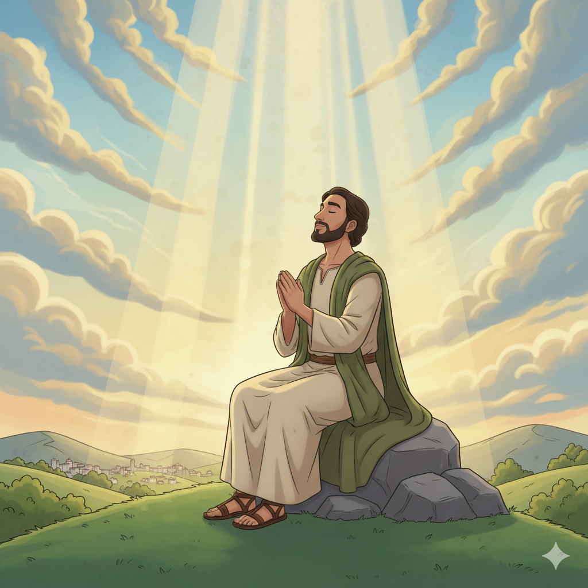
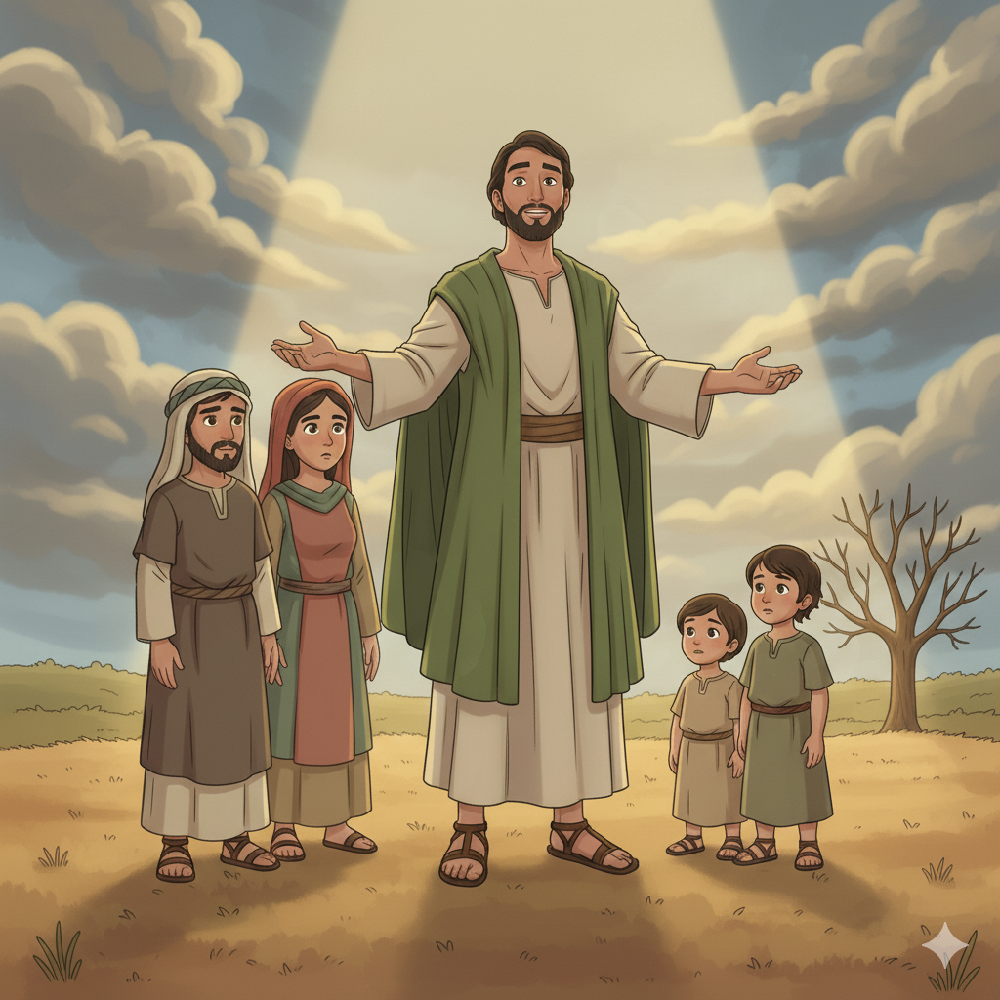

Conversando com Deus — Um Resumo Visual para Crianças
Habacuque não teve medo de questionar,
Com Deus ele foi conversar e perguntar:
"Por que o mal parece vencer aqui?"
E Deus respondeu: "Estou ouvindo, estou aqui!"
📖 Habacuque 1:2-4
Deus disse uma frase pequena mas poderosa demais,
Que atravessaria séculos e não pararia mais:
"O justo viverá pela fé, não por mérito ou poder,"
Esse versículo fez a Reforma Protestante acontecer!
📖 Habacuque 2:4
Sem figos, sem uvas, sem rebanho no pasto,
Sem nada na despensa — mas esse não é o contraste!
"Ainda assim me alegrarei no Senhor!"
Uma fé que não depende do que está lá fora!
📖 Habacuque 3:17-18
"O justo viverá pela fé."
📖 Habacuque 2:4b
Seis palavras simples. O versículo mais poderoso do profeta Habacuque — e um dos mais citados de toda a Bíblia!
Seu nome em hebraico (חֲבַקּוּק) significa "abraço" ou "o que luta abraçando". E o livro mostra exatamente isso: Habacuque "abraça" Deus com suas perguntas honestas, não fugindo, mas se aproximando!
💭 Sua Pergunta Corajosa:
"Senhor, até quando clamarei e Tu não ouvirás?" — Hc 1:2
Habacuque via ao redor: violência, lei ignorada, os pobres sendo esmagados pelos ricos, e ninguém fazendo nada. Isso deixava o profeta angustiado e cheio de perguntas.
⚖️ O Problema:
"A lei está enfraquecida e a justiça nunca prevalece." — Hc 1:4
Habacuque perguntou por que Deus não punia Judá. A resposta o chocou: Deus usaria a feroz Babilônia (Caldeus) como instrumento de julgamento! Isso gerou uma segunda pergunta ainda mais difícil...
😲 Segunda Pergunta:
"Como podes usar um povo mais ímpio ainda para punir?" — Hc 1:13

Habacuque faz duas perguntas difíceis: "Por que tu toleras a injustiça em Judá?" e "Por que usas os cruéis caldeus como instrumento?" É o único livro profético que começa com o profeta questionando Deus!
Deus responde com a frase que mudaria o mundo: "O justo viverá pela fé!" (2:4). Depois, pronuncia cinco "ais" de julgamento contra Babilônia, mostrando que os arrogantes também responderão a Deus.
Habacuque termina com uma oração-canção majestosa! Ele relembra o poder de Deus na história, confessa seu tremor diante de Deus, e conclui com a declaração de fé mais bonita da Bíblia: "Ainda assim me alegrarei!"
✨ Mensagem Principal:
"A fé verdadeira não depende das circunstâncias!"
Habacuque é o único livro profético estruturado como um diálogo: o profeta fala, Deus responde, o profeta questiona de novo, Deus responde de novo. É uma conversa real entre um homem e seu Criador!
"O justo viverá pela fé" (Hc 2:4) é citado 3 vezes no Novo Testamento. Quando Martim Lutero leu esse versículo em Romanos 1:17, ele teve uma revelação que mudou o mundo cristão para sempre!
O capítulo 3 termina com a nota "Para o mestre de música, com instrumentos de cordas". Era uma canção litúrgica real, cantada por corais no templo de Jerusalém!

Habacuque mostra que questionar Deus honestamente é diferente de rejeitar Deus. Quando levamos nossas dúvidas a Deus, estamos demonstrando que confiamos que Ele pode responder!
Quando a injustiça parece vencer, Habacuque ensina que Deus ainda está no controle — e os arrogantes (mesmo Babilônia!) responderão pelo que fizeram no tempo certo.
O clímax do livro (3:17-19) é a declaração máxima de fé: alegrar-se em Deus mesmo sem colheita, sem rebanho, sem nada. Uma fé que vai além do que podemos ver ou sentir!
"Ainda assim me alegrarei no Senhor, exultarei no Deus da minha salvação!"
📖 Habacuque 3:18
Em 1517, o monge Martim Lutero leu "O justo viverá pela fé" (Hc 2:4 → Rm 1:17). Esse versículo o fez entender que a salvação é graça, não mérito. Isso iniciou a Reforma Protestante — um dos maiores movimentos da história cristã!
"O justo viverá pela fé" aparece citado em Romanos 1:17, Gálatas 3:11 e Hebreus 10:38 — três vezes no NT! É um dos versículos do Antigo Testamento mais citados pelos apóstolos. Uma frase do profeta com impacto de séculos!
O capítulo 3 tem no rodapé: "Para o mestre de música, para usar com instrumentos de corda". A palavra "selá" aparece 3 vezes — uma marca musical. Habacuque não apenas profetizou: ele compôs uma canção para o culto no templo!
"O justo viverá pela fé" (Hc 2:4) é a base da teologia de Paulo: somos salvos pela fé em Jesus, não por obras. Paulo cita esse versículo para explicar o que Jesus realizou na cruz: a justificação pela fé!
No cântico final, Habacuque fala: "Tu saíste para salvar o teu povo, para salvar teu ungido" (3:13). A palavra "ungido" em hebraico é mashiach — Messias! Habacuque antecipa que Deus enviará um Ungido para libertar seu povo.
Paulo em Filipenses 4:11 diz: "Aprendi a contentar-me em qualquer estado." É o mesmo espírito de Hc 3:17-18! A alegria cristã não vem do que temos, mas de quem temos — Jesus Cristo. Habacuque prepara o caminho para essa revelação!
🔑 A Grande Conexão:
"O justo viverá pela fé" (Hc 2:4) → O justo é justificado pela fé em Jesus → "Portanto, tendo sido justificados por fé, temos paz com Deus por meio de Jesus Cristo." (Rm 5:1)
Habacuque fez perguntas difíceis a Deus. Você já quis perguntar algo para Deus mas teve medo? Que tipo de perguntas você faria?
Habacuque disse que se alegraria mesmo sem colheita nem rebanho. Você consegue ser feliz quando não tem o que quer? O que dá alegria de verdade?
Deus disse a Habacuque: "Escreve a visão em tábuas" (2:2). Se Deus te pedisse para escrever uma mensagem para sua geração, o que você escreveria?
Escreva uma carta honesta a Deus com uma pergunta que você tem no coração — algo que você não entende, como fez Habacuque. Depois leia Salmo 73 como resposta!
Faça sua própria "canção de Habacuque": liste 3 coisas que você NÃO tem (que gostaria de ter), e depois escreva: "Ainda assim me alegrarei porque..."
Memorize Habacuque 2:4b: "O justo viverá pela fé." Descubra com a ajuda de um adulto por que esse versículo aparece 3 vezes no Novo Testamento e qual foi o impacto na história da Igreja!
Trilho Kids | Desenvolvido com ❤️ para crianças © 2025